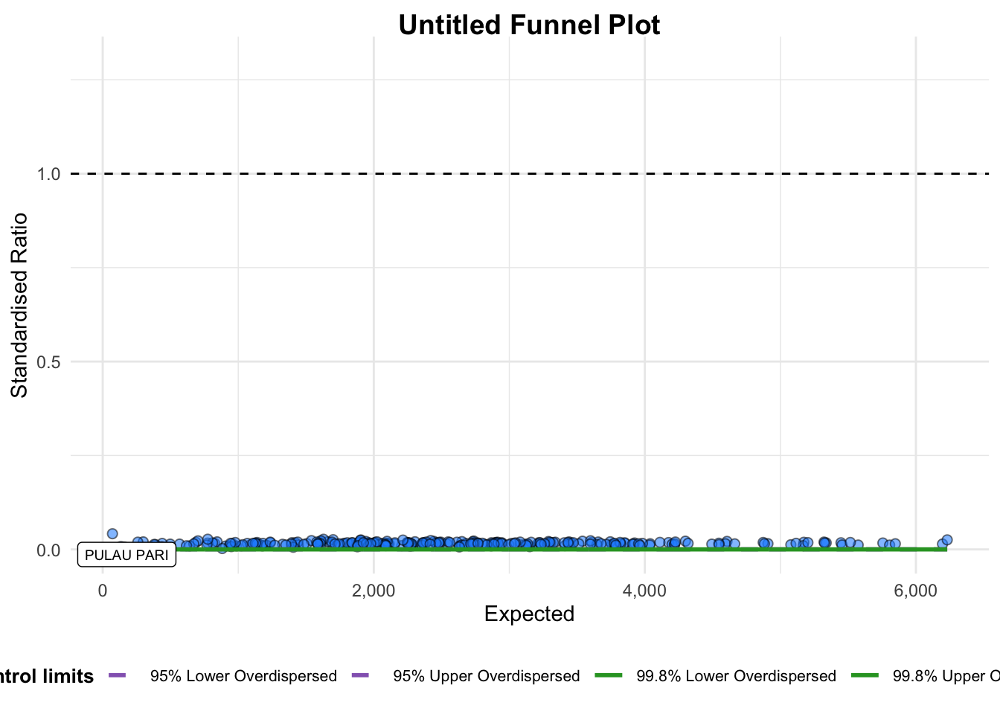
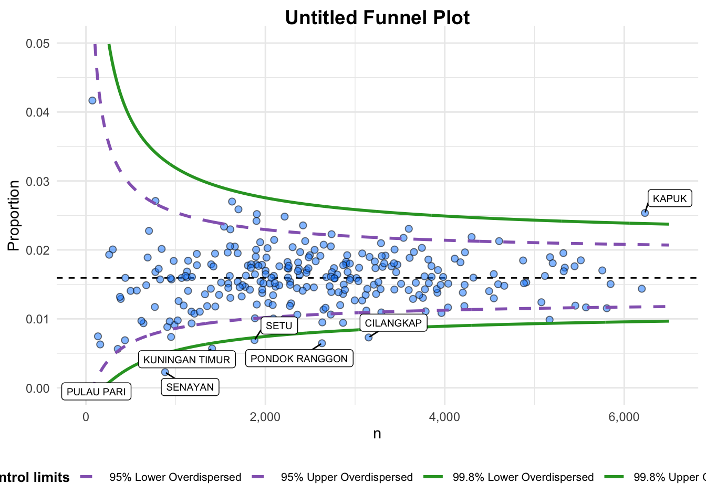

pacman::p_load(tidyverse, FunnelPlotR, plotly, knitr)Hands-on_Ex04-4
Funnel Plots for Fair Comparisons
4-4.1 Overview
Funnel plot is a specially designed data visualisation for unbiased comparison between outlets, stores or business entities. We will learn the following in this chapter:
- Plot funnel plots using
funnelPlotRpackage - Plot static funnel plot with
ggplot2package - plot interactive funnel plot by using both
plotly Randggplot2packages
4-4.2 Install and Launch R Packages
Four R packages will be used in this exercise:
- readr: import csv to R
- FunnerPlotR: create funnel plot
- ggplot2: create funner plot manually
- knitr: build static html table
- plotly: create interactive funner plot
4-4.3 Import Data
We use a new set of data for this exercise - COVID-19_DKI_Jakarta as of 31st July 2021 from Open Data Covid-19 Provinsi DKI Jakarta portal. In this exercise, we will compare the cumulative COVID-19 cases and death by sub-district (i.e. kelurahan).
First, we import the data into R and save it into a tibble data frame object called covid19.
covid19 <- read_csv("data/COVID-19_DKI_Jakarta.csv") %>%
mutate_if(is.character, as.factor)| Sub-district ID | City | District | Sub-district | Positive | Recovered | Death |
| 3172051003 | JAKARTA UTARA | PADEMANGAN | ANCOL | 1776 | 1691 | 26 |
| 3173041007 | JAKARTA BARAT | TAMBORA | ANGKE | 1783 | 1720 | 29 |
| 3175041005 | JAKARTA TIMUR | KRAMAT JATI | BALE KAMBANG | 2049 | 1964 | 31 |
| 3175031003 | JAKARTA TIMUR | JATINEGARA | BALI MESTER | 827 | 797 | 13 |
| 3175101006 | JAKARTA TIMR | CIPAYUNG | BAMBU APUS | 2866 | 2792 | 27 |
| 3174031002 | JAKARTA SELATAN | MAMPANG PRAPATAN | BANGKA | 1828 | 1757 | 26 |
4-4.4 FunnelPlotR Methods
FunnelPlotR package uses ggplot to generate funner plots. It requires numerator (events of interest), denominator (population considered) and group. The key arguments selected for customisation are:
FunnelPlotR Installation
install.packages("FunnelPlotR")limit: plot limits (95 or 99)label_outliers: to label outliers (true or false)Poisson_limits: to add Poisson limits to the plotOD_adjust: to add overdispersed limits to the plotxrangeandyrange: to specify the range to display for axes, acts like a zoom function- Other aesthetic components, such as
graph title,axis labelsetc.
4-4.4.1 FunnelPlotR methods: Basic plot
The code below plots a funnel plot.
funnel_plot(
.data = covid19,
numerator = Death,
denominator = Positive,
group = `Sub-district`
)
A funnel plot object with 267 points of which 1 are outliers.
Plot is adjusted for overdispersion.
Things to learn
groupin this function is different from the scatterplot. Here is defines the level of the points to be plotted, ie., Sub-district, District or City. If City is chosen, there are only six data points.- By default,
data_typeargument is “SR”. limit: Plot limits, accepted values are 95 or 99, corresponding to 95% or 99% quantiles of the distribution.
4-4.4.2 FunnelPlotR methods: Makeover 1
Adjust code to make over the previous plot.
funnel_plot(
.data = covid19,
numerator = Death,
denominator = Positive,
group = `Sub-district`,
data_type = "PR",
xrange = c(0, 6500),
yrange = c(0, 0.05)
)
A funnel plot object with 267 points of which 7 are outliers.
Plot is adjusted for overdispersion.
Things to learn from the code
+
data_typeargument is used to change from default “SR” to “PR” (i.e., proportions).+
xrangeandyrangeare used to set the range of x-axis and y-axis.